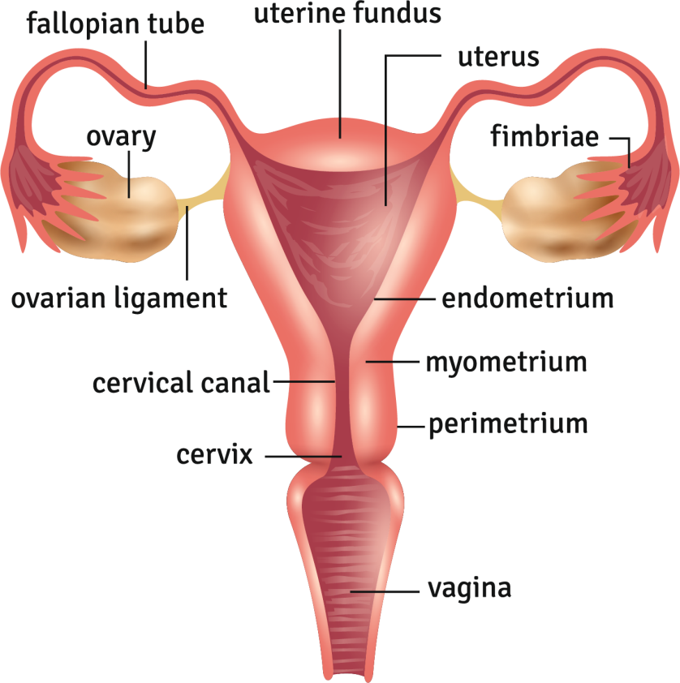

Submucosal Fibroid
Uterine fibroid located just beneath the inner lining of the uterus.
Subserosal Fibroid
Uterine fibroid located on the outer wall of the uterus.
Tamoxifen
Medication used to treat and prevent breast cancer by blocking estrogen receptors.
T-shaped IUD
Intrauterine device with a T-shaped design used for contraception.
Tubal Ligation
Surgical procedure to block or seal the fallopian tubes to prevent pregnancy.
Uterine Artery Embolization
Procedure to block blood flow to uterine fibroids, reducing their size.
Uterine Fibroid
Noncancerous tumor in the uterus made of muscle tissue.
Uterine Polyps
Abnormal growths in the uterine lining that may cause bleeding.
Uterus
The organ where fetal development occurs during pregnancy.
Vaginal Atrophy
Thinning and inflammation of the vaginal walls, often due to low estrogen.
Vaginal Bleeding
Bleeding from the vagina that occurs outside of the normal menstrual cycle.
Vaginal Discharge
Fluid or mucus expelled from the vagina.
Vaginal Estrogen
Estrogen applied locally to relieve vaginal dryness and atrophy.
Vaginal Ring
Hormonal contraceptive device placed inside the vagina.
Vaginitis
Inflammation of the vagina, often due to infection or irritation.
Vulvovaginitis
Inflammation of the vulva and vagina.
Withdrawal Bleeding
Bleeding that occurs during the menstrual cycle after stopping hormonal contraception.
Women's Health
Medical field focusing on the health issues and care specific to women.
Zygote
Fertilized egg formed by the union of sperm and egg.
